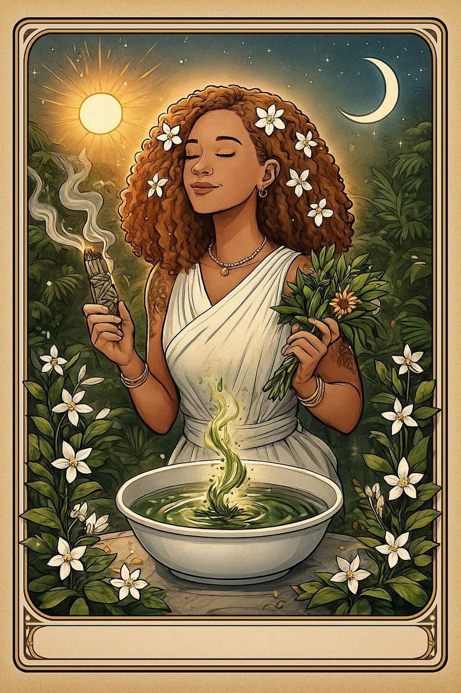

Aprenda a ler a aura, escolher, despertar, preparar e aplicar as folhas sagradas a partir de um método tradicional transmitido por gerações de rezadeiras, curandeiras e herveiras do Recôncavo Baiano.
Ser Terapeuta Herveiro não é decorar listas de ervas da internet nem copiar receitas prontas de redes sociais. É compreender a anatomia sutil do ser humano e a inteligência viva do reino vegetal.
Aprenda a mapear os corpos sutis com precisão através do Dual Rod e do Oráculo das Folhas. Identifique sobrecargas, estagnações e carências energéticas antes de indicar qualquer preparação.
Compreenda a ciência das folhas quentes (descarrego bruto), mornas (equilíbrio e sustentação) e frias (acalanto e elevação). Saiba a dosagem exata e o tempo correto de cada banho e defumação.
Folha sem reza e sem intenção é apenas vegetal seco. Você aprenderá a acordar o espírito da planta (ewé) com as cantigas tradicionais e rezas ancestrais de cura e proteção.

Reconhecida pelo parecer técnico do Prêmio Rodrigo Melo Franco de Andrade (IPHAN) pela salvaguarda do patrimônio imaterial e saberes tradicionais das folhas e rezadeiras do Recôncavo Baiano.
A sabedoria do Fé nas Folhas não nasceu em salas assépticas nem em compêndios genéricos. Ela carrega o cordão umbilical de quatro gerações de mulheres do Recôncavo Baiano e do sertão baiano que curavam com as mãos e com as folhas.
As raízes ancestrais: benzedeiras de mãos certeiras que atendiam a comunidade com reza forte, garrafadas, emplastros e sacudimentos nos terreiros e roças da Bahia.
A transmissão viva da farmácia de quintal, a dosagem exata do sabão da costa, o respeito aos ciclos da lua e a proteção espiritual no cuidar do outro.
Uniu a tradição oral das mais velhas com o método pedagógico, o Jornalismo Griot, o livro 'Fé nas Folhas' e a criação do Oráculo físico para formar novos guardiões dessa medicina.
"Você não está comprando um curso gravado por quem leu três livros. Você está sendo iniciado num ofício vivo, com raízes profundas e legitimidade ancestral."
Você sai da formação com segurança absoluta para diagnosticar, manipular e prescrever tratamentos naturais em seus atendimentos presenciais ou à distância.
Capacidade de medir o campo biomagnético, identificar orifícios áuricos, bloqueios nos chakras e direcionar o tratamento correto com as varetas de latão.
Utilizar o baralho Tarô Fé nas Folhas como instrumento de diagnóstico clínico e direcionamento terapêutico preciso para cada consulente.
Saber produzir e indicar tinturas fitoterápicas, sabões ancestrais, emplastros, travesseiros terapêuticos de ervas e defumações de alta frequência.
Composição alquímica correta de banhos para ansiedade, insônia crônica, quebra de demandas, desânimo, bloqueios na prosperidade e cura do feminino.
Entoação de cantigas de benzedeiras, rezas da Curandeira das Águas e a postura correta para aplicar a Reza Forte sem absorver a carga do atendido.
Ajuste fino e 'correção de mão' diretamente com Sueide Kintê nos encontros de mentoria ao vivo, tirando dúvidas de casos reais dos seus consulentes.
Se você já atende com Tarô, Baralho Cigano, Astrologia, Massoterapia, Reiki, Psicoterapia Holística ou Terapia Integrativa, a fitoenergética tradicional é o elo que faltava entre o diagnóstico e a prescrição prática.
Não termine sua consulta apenas dizendo o que o jogo revelou. Entregue um protocolo botânico sob medida: qual banho tomar, qual erva queimar e qual reza fazer para harmonizar aquele mapa ou tiragem.
Incorpore águas de cheiro, óleos macerados no fundamento, sacudimentos com vassourinhas de ervas e alinhamento áurico com Dual Rod antes e depois da sessão corporal.
Se você sente o chamado ancestral de curar e benzer mas não sabia por onde começar com segurança jurídica e método tradicional, esta formação é a sua porta de entrada completa.
São 56 aulas e conteúdos densos organizados em módulos progressivos, com videoaulas práticas, áudios das rezas e cantigas, e-books em PDF e mapas mentais de consulta rápida.
Acervo completo de cantos sagrados gravados para aprendizado.
Guia ilustrado de plantas medicinais, sagradas e seus orixás/energias.
Compêndio digital com proporções, diluições e formas de preparo.
Você não fica apenas na teoria digital. Enviamos as ferramentas tradicionais consagradas para que você inicie seus atendimentos imediatamente.
Encontro prático para "correção de mão", alinhamento da postura terapêutica, treino de leitura áurica no tato e consagração pessoal do seu ofício.
Sessão estratégica exclusiva para tirar dúvidas de casos clínicos reais dos seus consulentes, validação de protocolos botânicos e estruturação da sua esteira de atendimentos.
Orientação completa de precificação, posicionamento ético, atração de clientes e comunicação autêntica para lotar sua agenda.
Buscamos alunas e alunos comprometidos com a seriedade e o respeito que as folhas sagradas exigem.
Acesso completo à plataforma de aulas, kit físico enviado à sua casa, tarô Fé nas Folhas e as 2 mentorias individuais exclusivas com Sueide Kintê.
Tudo o que você precisa saber antes de iniciar sua jornada na formação.